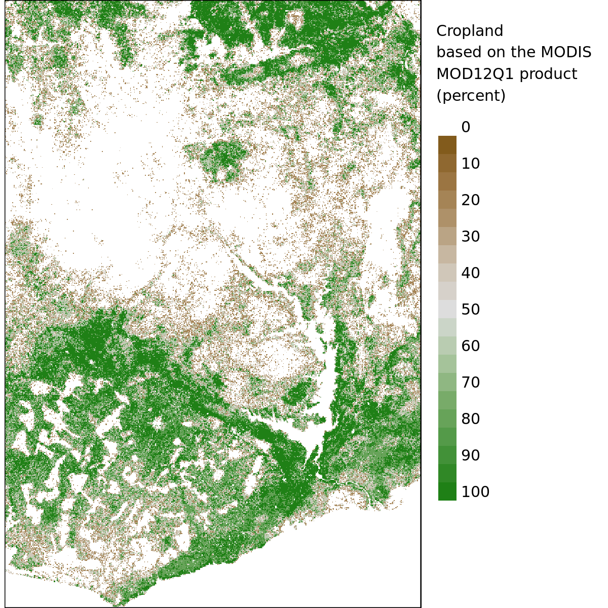
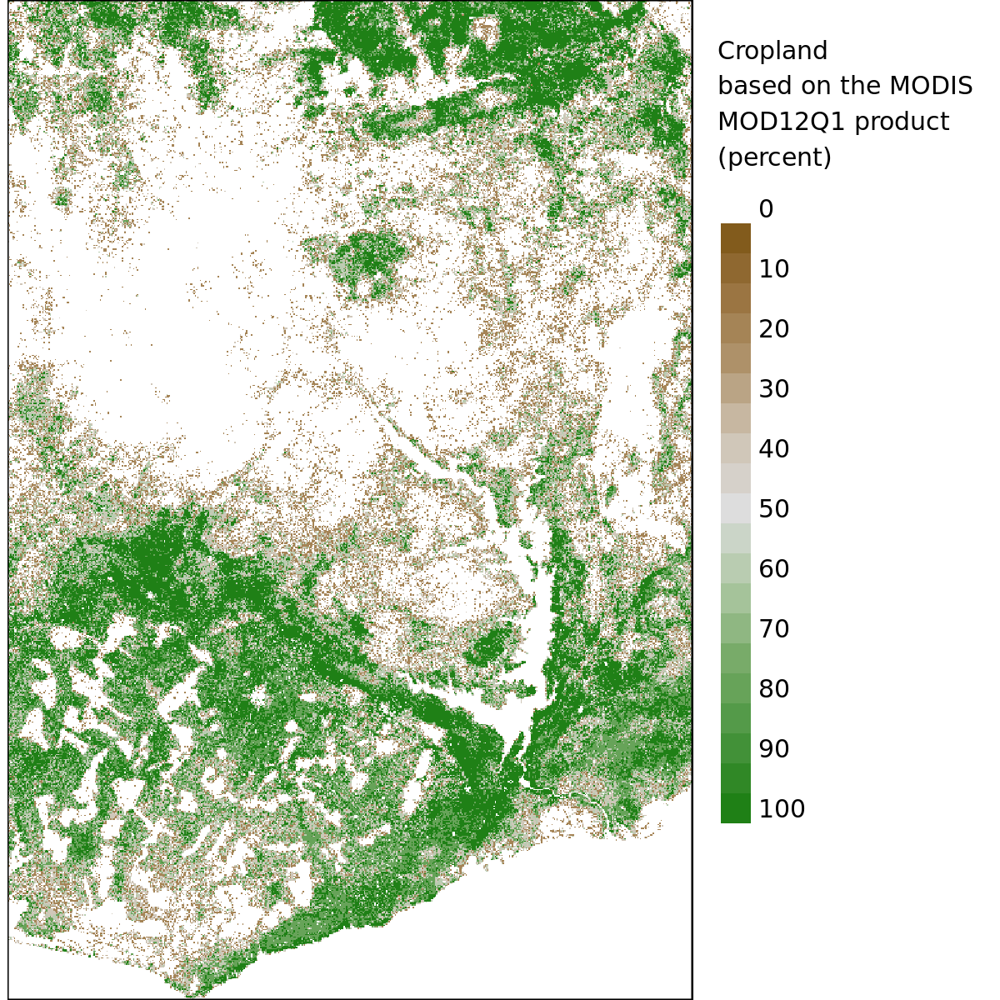

SSA Agricultural Potential (Documentation)
BACOU, Melanie for BMGF
Last updated on 2017-07-13. DO NOT USE OR CITE
Section 1 Data Sources
Existing sources of hi-res spatial covariates (tested over Ghana).

Existing sources of hi-res spatial covariates (tested over Ghana).
